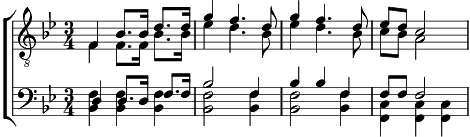

Montanara (la)
Sib majeur
Paroles: Toni Ortelli
Musique: Toni Ortelli
Arrangement: Luigi Pigarelli

Là su per le montagne, fra boschi e valli d'or,
tra l'aspre rupiecheggia un cantico d'amor.
Là su per le montagne, fra boschi e valli d'or,
tra l'aspre rupiecheggia un cantico d'amor.
La montanara, ohé! si sente cantate,
cantiom la montanara e chi non la sà?
La montanara, ohé! si sente cantate,
cantiom la montanara e chi non la sa?
Là su sui monti dei rivi d'argento
une caponne cosparsa di tior
era la piccolo dolce dimora
di Soreghina la figlia del Sol,
la figlia del Sol.